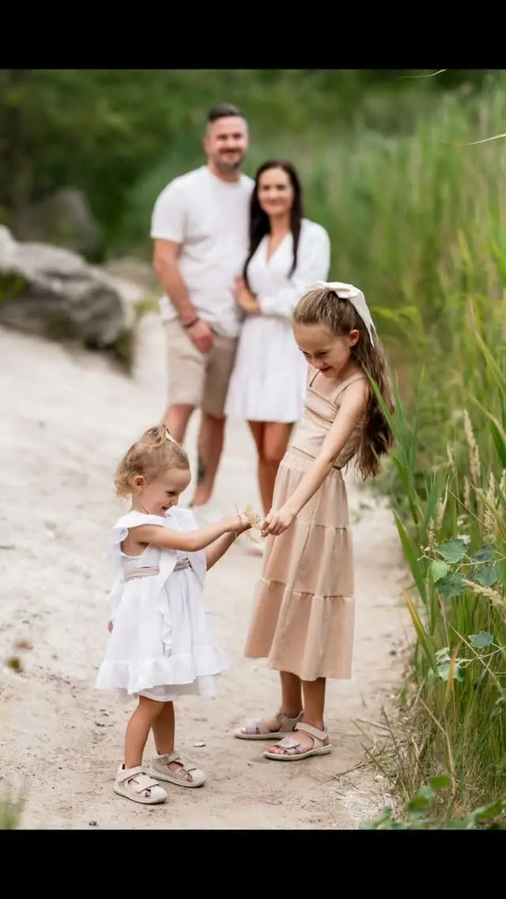
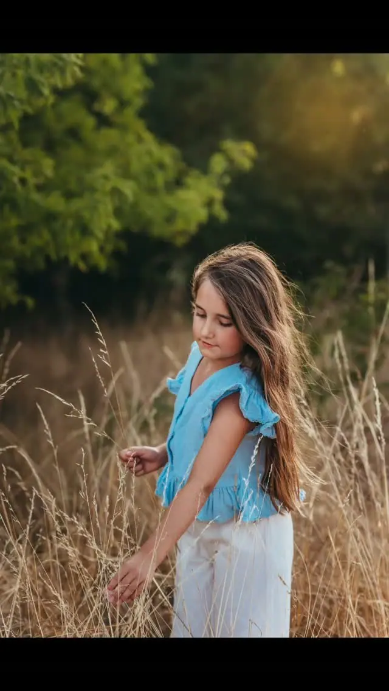
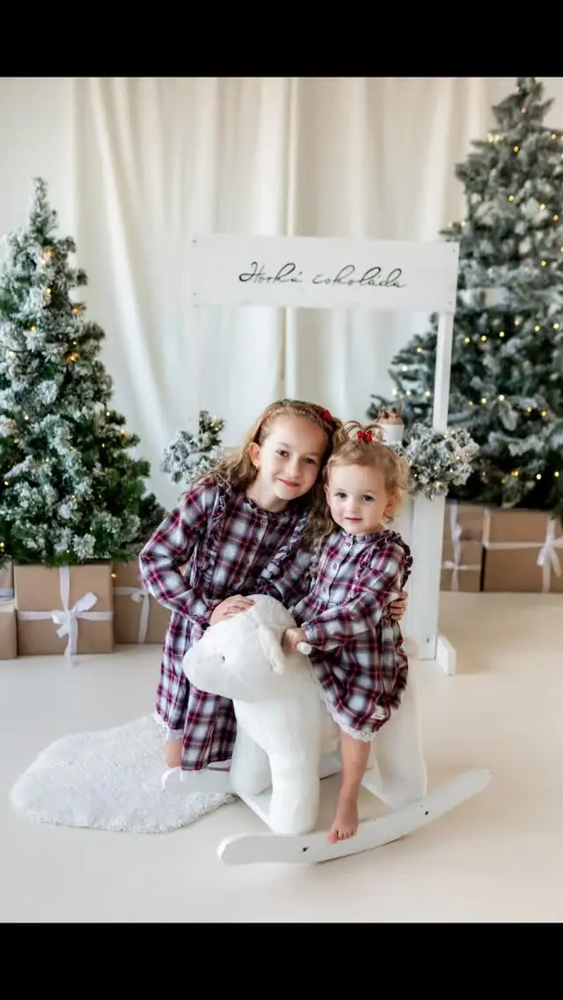

Rodinné focení
Rodinné portréty, na kterých je vidět vřelost a blízkost mezi vámi. Fotíme venku zhruba hodinu, nebo v ateliéru za příplatek.

Jmenuji se Klára Neveselá, jsem maminka dvou dětí a fotím rodiny, těhulky, miminka a zamilované páry v Brně, ve Vyškově a na jižní Moravě. Ráda se ale vypravím i na vaše…
Rezervovat termínJsem člověk, který si nejvíc cení pohody a dobré nálady. Ráno se nejradši probouzím se šálkem dobré kávy, je to takový můj každodenní rituál. Stejnou pohodu se snažím přenést i do focení, abyste byli co nejvíc uvolnění a sami sebou.


Rodina je pro mě vše. Je to moje zázemí, moje jistota a moje láska. Možná proto mě tolik baví fotit právě rodiny, maminky v očekávání a čerstvě narozená miminka. Snažím se, aby na každé fotce zůstaly emoce, které v tu chvíli cítíte.
Ráda objevuji nová místa, poznávám nové kultury a potkávám nové lidi. Cestování mi dává pocit svobody. Proto fotím nejčastěji venku, v polích se slunečnicemi, v levanduli nebo ve vysoké trávě, a ráda se přizpůsobím místu, které je blízké vám.
Co fotím
Rodinné portréty, na kterých je vidět vřelost a blízkost mezi vámi. Fotíme venku zhruba hodinu, nebo v ateliéru za příplatek.
Párové focení plné lásky a radosti, venku na místě, které máte rádi. Snažím se, abyste byli co nejvíc uvolnění a sami sebou.
Těhulky fotím nejčastěji kolem 30. týdne těhotenství. Ráda vám poradím s oblečením a šaty na focení vám můžu i půjčit.
Miminko fotím v pohodlí vašeho domova, ideálně do 14 dnů od narození, ale fotit můžeme i později. Focení trvá asi dvě hodiny.
Postup
Termín doporučuji domluvit alespoň měsíc dopředu, rezervovat si ho můžete i online přes formulář. Těhulky fotím kolem 30. týdne, miminka ideálně do 14 dnů od narození.
Ráda vám poradím, co si na focení vzít. Mám také šaty, které vám na focení půjčím.
Rodinné, těhotenské i párové focení trvá zhruba hodinu, newborn asi dvě hodiny. Nikam nespěcháme a snažím se, abyste byli co nejvíc uvolnění.
Všechny pořízené snímky vám pošlu do 3 dnů a fotky si vyberete sami. Ty vybrané vám upravím nejpozději do 3 týdnů.
Otázky
Focení stojí 2000 Kč a trvá asi hodinu. Dostanete 10 upravených fotek v elektronické podobě, každá další fotka je za 200 Kč. Focení v ateliéru je s příplatkem za pronájem.
Miminko fotím u vás doma, takže nemusíte nikam jezdit. Focení trvá asi dvě hodiny, stojí 2500 Kč a dostanete 8 upravených fotek v elektronické podobě.
Těhotenské focení ideálně kolem 30. týdne těhotenství. Miminko nejlépe do 14 dnů od narození, ale fotit můžeme i později.
Fotím hlavně v Brně, ve Vyškově a na jižní Moravě. Ráda se ale vypravím i na vaše oblíbené místo.